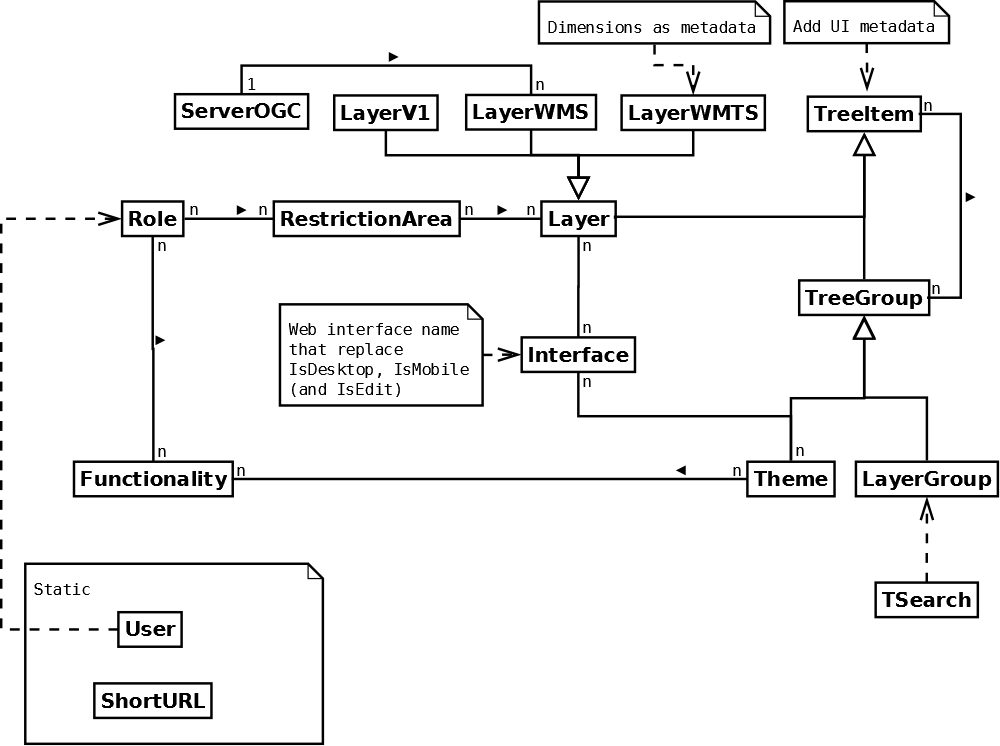

Server-side development¶
Creating a development environment in a project¶
c2cgeoportal developers often need to test c2cgeoportal changes in the context of an existing c2cgeoportal application. Here is how:
Build the new containers:
git clone git@github.com:camptocamp/c2cgeoportal.git
cd c2cgeoportal
make build
Now, the new containers are ready to use in the application on the same host.
Docker images¶
GeoMapFish provides the following Docker images:
camptocamp/geomapfishthe base image for the project geoportal runtime image.camptocamp/geomapfish-configthe base image for the project config runtime image.camptocamp/geomapfish-toolsthe base image for the build and for custom tools.camptocamp/geomapfish-qgisserverthe QGIS server image with the restricted access plugin.camptocamp/geomapfishapp-geoportalthe geoportal image in simple application mode.
In the project you will have two images:
camptocamp/<project>-geoportalthe geoportal imagecamptocamp/<project>-configthe config image
Tests¶
Running tests¶
c2cgeoportal has two types of tests: unit tests and functional tests. The unit
tests are self-contained, and do not require any specific setup. The functional
tests require to run with docker-compose.
Unit tests¶
Before running the tests, install and build all dependencies:
make preparetest
Run the tests:
make tests
To run only a specific test, use the -k switch. For example:
docker-compose exec tests pytest --verbose --color=yes \
-k test_catalogue /opt/c2cgeoportal/geoportal/tests
Database¶
Object model¶
TreeItem and TreeGroup are abstract classes used to create the tree.
FullTextSearch references a first level LayerGroup, but without any constraints.
metadata vs functionality¶
The same functionality can be reused by more than one element.
functionalities are designed to configure and customize various parts of the application.
For instance, via a functionality you can define which basemap is to be used when a new theme is loaded.
The metadata contains attributes that are directly related to the element;
for example, the layer disclaimer.
Migration¶
We use the alembic module for database migration. alembic works with a
so-called migration repository, which is a simple directory /opt/alembic in the
docker image. So developers who modify the c2cgeoportal database schema should add migration scripts.
Add a new script in c2cgeoportal root directory:
python3 -m pip install --user -e commons
alembic --config=commons/alembic.ini \
--name=[main|static] \
revision --message "<Explicit name>"
This will generate the migration script in
commons/c2cgeoportal_commons/alembic/[main|static]/xxx_<Explicite_name>.py.
To get the project schema, use:
schema = context.get_context().config.get_main_option('schema')
The scripts should not fail if they are run more than once. See: https://alembic.readthedocs.org/en/latest/cookbook.html#conditional-migration-elements
Then, customize the migration to suit your needs, test it:
docker-compose exec geoportal upgrade head
- More information at:
To use alembic scripts on custom schemas or tables see Alembic on custom tables.
Dependencies¶
Major dependencies docs: